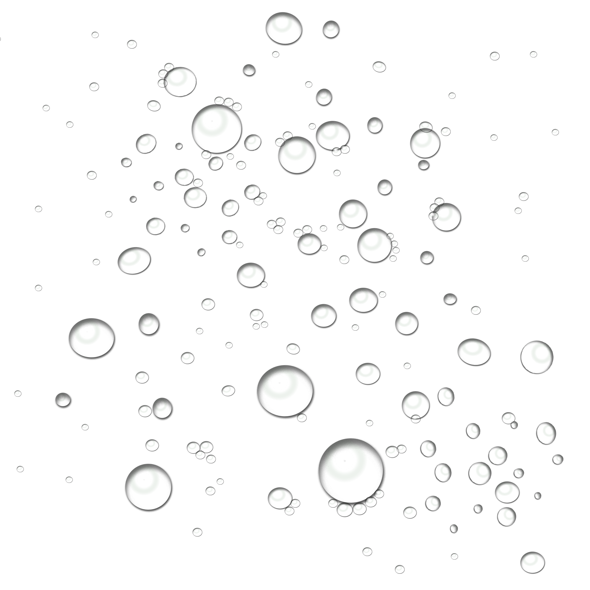

Welcome, GhostOfDarwin | Log Out
New Memory
Search
Calendar

Once you have the profile, we can start creating your island.
- I'll show you how I did it first.
As a ghost I follow technical novelties and the old journal began to get boring for me, so I invented a new way of recording my memories.Do you know how coral islands are made?
Look around my island and scroll to zoom. As you can see, I can create new memories, search through my memories and check out the calendar of memories.
Click on the new memory icon to start some real fun :)
You can also click here to search for memories.
There's also a nice memories calendar, click here and let's check it out.
